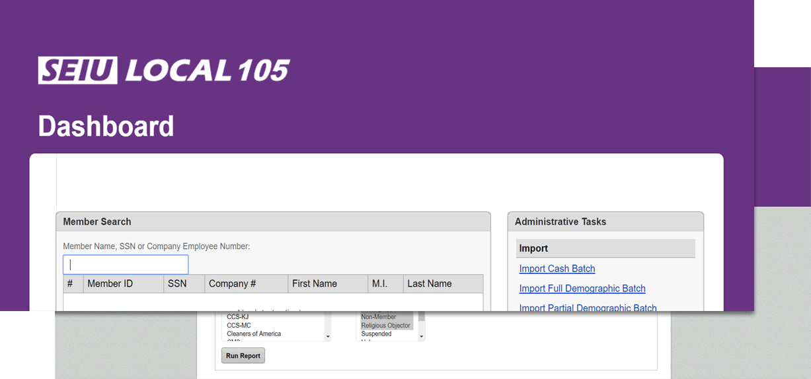

Between 2009 and 2013, working for a fast-growing US NGO with $5M in annual revenue, I rose from a low-level analyst role to full responsibility for data strategy and systems, reporting to the directorship. During this time, I discovered expensive design flaws and relationship-destroying UI problems in our primary data system.
Over two years, I produced research and documentation in support of a proposal for a sweeping overhaul of the core digital infrastructure of the business, which performed complex billing and member relationship management. While I designed and deployed interim solutions, I interviewed stakeholders and ultimately won support from key decision-makers (including elected officials).
I then designed, prototyped and performed lead Project Management on a new data system, delivering an on-budget product at 60% of the cost of outside vendor estimates. Our product ultimately increased net annual revenue by 10% and significantly improved member relations. Afterward, I consulted for other offices of the same NGO, implementing the newly built system in multiple cities.